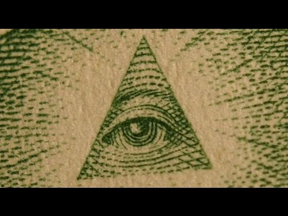

オカルト的パワーの秘儀をあからさまに公開し、解説

初出
【編】オカルト的パワーの秘儀をあからさまに公開し、解説してみる。 (2021-11-07) オカルト
前置き
- Mark Passio のインタビュー動画を見かけた。彼については下の過去記事で取り上げたことがある。 Mark Passio : "Natural Law" を語る。 (2020-05-27) 講演動画：映画 "Matrix" 三部作の解読 （途中：その1） (2015-06-25) - その Mark Passio （下）が 自ら体験した "dark occult"（黒オカルト）の実態を証言している。彼の発言を出だしのネタとして、タイトルの件をコメントで試みる。
手抜き
- 15:30 複数のオカルト団体に教師役として関与していた時に体験。あらゆる階層の一般人も参加していたが、政治家、経済人、銀行家、裁判官、軍人、警察官、学校教員、芸能界、科学者、医者といった人々も大勢、参加していて驚いた。 - 世界的な企業の指導的立場の人物も悪魔的儀式に参加していた。彼らは平民の自由を奪い奴隷として扱い、オカルト的知識によって支配者の立場に立つことを望んでいた。私はそれを実地に見てきた。これが dark occult（黒オカルト）と私が呼ぶものだ。白オカルトの対極だ。 - 27:00-- 彼らは死者の意識を操り、一般平民の意識を支配するためのオカルト的知識を何世紀も昔から使ってきた。彼らはそれを公言しないが、密室ではそれを平然と私に語っていた。 - 28:30 彼らはメディアを操り、警察組織を飼い犬とし、軍を道具としている。それゆえ彼らは警察や軍を「我々の飼い犬」と呼んでいる。さらに一般大衆を死人（＝ゾンビ）と呼んでいる。 - 30:00 悪は滅びるという主張は精神世界信者のお伽噺だ。ナチスや中国の圧政の歴史を見よ。 - 35:00 悪魔主義を人は誤解している。悪魔主義とは悪魔的存在と交流することではない。善も悪もないとし、自分のエゴのために他人を好き放題に利用することが悪魔主義の核心なのだ。 - 44:00 私が唯一認めるのは Natural Law だ。動画（1:59:56）
The Dark Occult, Agendas of Non-Human Entities, Natural Law and More | Mark Passio | UFO HUB #52コメント1
- Mark Passio は Natural Law （例：殺すな、奪うな、強姦するな…の類）を Law（文脈から人間が遵守すべき掟、守らないと死後に報いを招く掟…の意味）だと信じ、未だにインタビューや講演でもそれを熱心に説いているようだ。 - だが、そのような掟は「こういう世界であって欲しい、いやそうあるべきだ」という願望や理念でしかない。人間は動物の一種であり、動物界に「殺すな、奪うな」という掟は存在しない。当然、人間界にもそのような掟は存在しない。存在しないゆえに道徳や宗教、倫理規範という人為的な制度（＝掟の代替品）でタガをはめようと何千年も試みてきた。コメント2
- Mark Passio のこのインタビューでの発言から、彼はオカルトの秘儀的パワーをナイーブに信じていることがわかる。つまり彼は… ・(a) オカルト儀式やオカルト知識のもつ「隠された未知のパワー」は現実世界に甚大な影響を及ぼす。 ・(b) イルミナティやフリーメーソンのようなオカルト組織は「隠された未知のパワー」を行使することで裏側から一般社会を支配している。 ・(c) それゆえ、社会のエリート層もそのパワーを求めてオカルト組織に加入している。 …このように本気で信じている。 - だが、オカルト的パワーは遠隔視や正夢の類と同じく 稀 かつ 気まぐれ的に作用することはありえても、決して常用にも実用にもならない。その意味でオカルト・パワーは宝くじに似ている。つまりオカルト的パワーは実質的に虚構でしかない。「隠された未知のパワー」はあくまでオカルト・ファンの幻想（＝虚構）でしかない。誤解を避けるために、最初にこれを強調しておく。 - だが、それで話は終わりではない。そのオカルト・ファンの幻想の先に「ベールを纏った秘密」がある。その秘密こそが本当の意味でのオカルトにおける「隠された未知のパワー」の秘儀となっている。その秘密を以下であからさまに(w) 公開し、解説する。 - 繰り返すが、「隠された未知のパワー」はあくまでオカルト・ファンの幻想でしかない。だが、幻想であるがゆえに使い道がある。カネと同じ。カネの価値は幻想だが、それに価値があると過半の人間が信じれば、カネは社会に通用し始める。そして誰もがこの幻想でしかない筈のカネのパワーに全人生を支配されている。 - 同じことがオカルト的未知パワーにも言える。オカルト的未知パワーは虚構でしかないが、オカルト的未知パワーが存在すると大勢の人間（特にエリート層）が若干でも信じれば、社会に現実的な影響を与え始める。その影響力を見て正帰還がかかり、更に信じるようになる。つまり、虚構（＝純然たる幻想）が現実においてパワーを行使し始める。虚構が現実を支配し始める。この仕組みによって、中世においてキリスト教会が圧倒的パワーで社会を支配した。日本の天皇制も同じ仕組み。これを理解し、承知の上で利用したのがアメリカ建国の際のフリーメーソン（ドル紙幣にある例の万物を見通す眼のシンボルこそ、裏に何かあると思わせるためのハッタリの典型）であり、イルミナティなどの組織。 - オカルト的未知パワーの秘儀の要所を、あからさまに公開すると以上のようになる。 - つまり、オカルトの「隠された未知のパワー」など最初から存在しないが、あたかもそれが存在するかのようにハッタリを利かせて巧妙に振る舞うことで（終いには自分でも本気で信じるようになれば、更に効果的）、現実に同様の影響力を行使することが可能となる。これ（虚構による現実支配）こそが、本当の意味でのオカルト的パワーの秘儀。 - その具体例が禅。悟りや公案がその「隠された未知のパワー」の典型。禅の悟りや公案に「隠された（＝言語表現不可能な幽玄な）真理」など最初から存在しないが、あたかもそれが存在するかのようにハッタリを利かせて巧妙に振る舞うことで（終いには自分でも本気で信じるようになれば、更に効果的）、現実に同様の影響力を行使できている。『般若心経』の色即是空のようなあからさまなタワゴト（＋末尾の呪文）を著名仏教学者を含め皆がありがたがっている。葬式で呪文を唱えることで寺が食っていける（*1）のも同じ仕組み。 - もうひとつの具体例が宗教的境地という虚構。さらに言えば…。宗教的境地は共同体の間で共有される模範幻想の一種ですから、多数派の凡人にもそれがある程度は察知できなければなりません。誰にも察知できない宗教的境地は存在しないのと同じです。もともとが幻想ですから、実体はありません。なので曖昧に察知されるだけの虚構的存在です。虚構ですが、カネと同じで共同体に強い影響を及ぼし、構成員の思考パターンを支配します。 宗教的境地に関する「相手がどの程度の境地に達しているのかは自分もその境地に達していないと判断できない」という発想それ自体もまた、共同体の間で共有される模範幻想に含まれています。日本でいえば、悟りとはこういうものだ、悟った人物の行いはこういうものだ…という模範幻想がそれで、禅語録の類がその普及の役割を担ってきました。 卑近な例で喩えると、宗教的境地は、講談話におけるヤクザの親分の「貫禄」みたいなものです。ヤクザ社会という共同体の間で共有される模範幻想の一種が「貫禄」です。禅語録に対応するのが講談話でどちらも虚構のオハナシです。 ref: 宗教的境地とは何か。 (2020-12-29)- Jordan Maxwell（著名な民間オカルト研究者）などはこの機微が見抜けず、やれシンボルが…、言葉の本来の意味が…、隠された意味が…とあらぬ方向へ迷走している。ダ・ヴィンチ・コードが…、カバラの秘儀が…というのも同類。 - 上記の意味でのオカルト的パワーはオカルト界隈のみならず、宗教はもちろん、経営でも政治・軍事でも国際的エリート組織（例：ダボス会議、外交問題評議会、…）でも利用されている。マス・メディアも存分に活用している（fake news）。 - 当然、一般通念にもこの「虚構による現実支配」は行き渡っている。たとえば、「人間は皆平等だ」という社会理念。この社会理念に確たる根拠は何もない。学者の様々な主張はあるがどれも頭でっかちの空論でしかない。逆に反証材料が溢れかえっている。誰もが日々の生活でそれを虚構だと実感している。なのに、その虚構の建前を誰も否定できないし、虚構だと公然と指摘することもできない。そして「人間は皆平等だ」という虚構を根拠にして、支配層は現実を己に有利な方向へと曲げる（それが共産主義、社会主義の無数の悲劇－－ポルポト、スターリン、毛沢東による自国民大量虐殺を見よ－－を招いた）。これが虚構による現実支配の恐ろしさ。 - ちなみに…。Roswell 事件や MJ-12 文書も、「最初から存在しないが、あたかもそれが存在するかのようにハッタリを利かせて巧妙に振る舞うこと」で UFO 業界に甚大な影響力を発揮してきた。 - …とまぁ、以上が、現段階の私のオカルト・パワーのメカニズムに関する理解。たぶん、私が知らぬだけで誰かが同様の趣旨で、より深く掘り下げ、説得力のある説明をしている筈。 - 蛇足：この文章を書き始めた時は、なかなかの見方だと思ったが、書き終えて冷静に読み返すと、なんとも陳腐で凡庸なことよ…と気づくw。 この程度が私の実力の限界か。（*1）
- 中村 元（著名な仏教学者）が著書で述べていた。詩句（文脈からいって経や呪文を含む）を唱えて供養や報酬を受け取ることを釈尊は拒否していた…と。記憶が曖昧だが、釈尊はそれを僧にも禁じていたようだ。 - 釈尊は、僧が信者への説法によって供養や報酬を受け取ることは当然だとしていたので、説法を高く評価し、逆に信者を相手に経や詩句・呪文を唱えて魔術的効果を期待することを劣った行為として禁止したのだろう。 (2021-11-07)